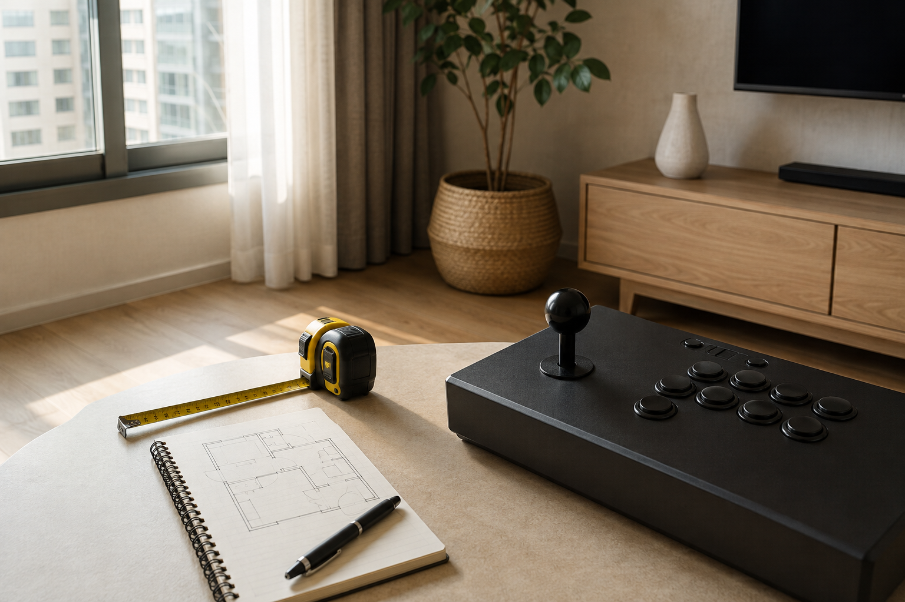
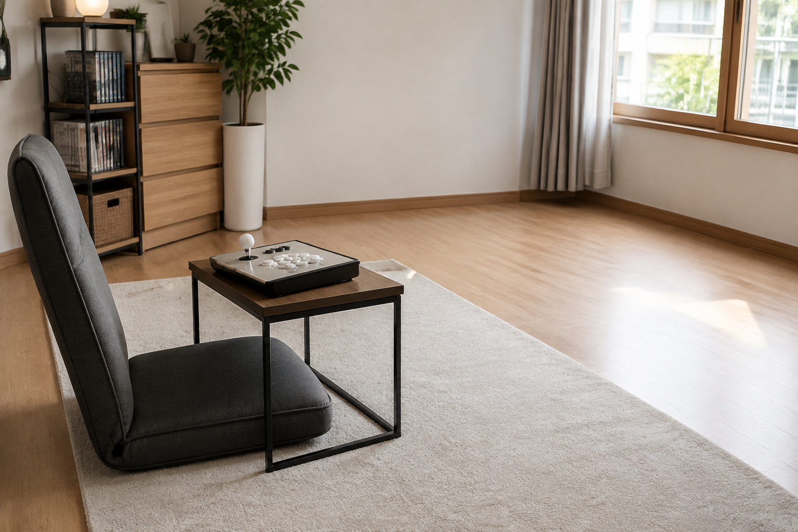
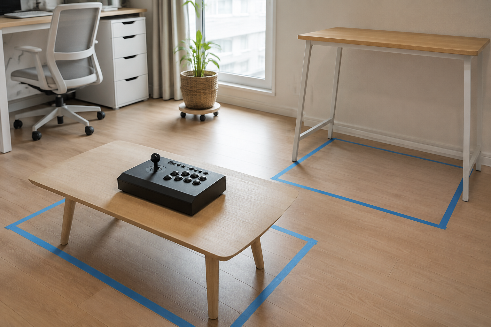

우리 집 공간에 맞는 오락기 형태는 기기 자체의 자리만 재기보다, 주로 서서 할지 앉아서 할지와 화면을 보는 위치, 주변 동선을 함께 확인해 고르는 편이 좋습니다. 사용 장면을 먼저 정하면 스탠드형·좌식형·테이블형처럼 서로 다른 형태를 내 집 기준으로 비교하기 쉽습니다.

먼저 사용할 자리를 그려 보세요
오락기를 둘 후보 자리를 정한 뒤, 기기 앞과 옆에 사람이 움직일 곳도 함께 표시해 보세요. TV를 함께 쓴다면 화면 앞의 자리와 조작할 위치가 겹치지 않는지도 살피는 편이 좋습니다. 줄자와 메모만으로도 설치 후 답답할 수 있는 지점을 미리 찾아볼 수 있습니다.
오락기 설치 공간은 기기 면적과 사람의 움직임을 함께 확인해야 합니다.

즐기는 자세와 동선을 함께 확인하세요
서서 즐기는 시간이 많다면 기기 앞에 편하게 설 위치가 필요한지 생각해 보세요. 바닥이나 낮은 좌석에서 즐길 계획이라면 앉은 뒤 팔과 다리를 둘 자리, 조작부까지의 거리를 같이 확인하는 것이 좋습니다. 노리박스 제품 목록에는 ‘신형HX 32+’ 스탠드형과 좌식형 제품이 함께 있어, 형태별 안내를 현재 판매 페이지에서 비교할 수 있습니다.
즐기는 자세가 달라지면 필요한 공간과 주변 동선도 달라집니다.

제품 형태는 생활 방식과 맞춰 보세요
평소 거실에서 짧게 즐길지, 별도 방에서 오래 즐길지에 따라 편한 높이와 배치가 달라질 수 있습니다. 노리박스 제품 목록에는 ‘신형HX 20+ 테이블형 레트로 가정용오락기’처럼 테이블형을 이름에 밝힌 제품도 있습니다. 제품명은 비교의 시작점이므로, 크기와 구성은 구매하려는 상품 페이지의 현재 안내를 기준으로 확인하세요.
제품 형태는 집 안에서 실제로 사용하는 시간과 장소에 맞춰 비교해야 합니다.
구매 전에는 내 공간 기준으로 질문하세요
구매 전에는 아래처럼 내 집에 맞는 질문을 적어 두면 판매 페이지의 정보를 더 쉽게 확인할 수 있습니다. 노리박스는 제품을 준비할 때 직접 게임을 실행하고 조이스틱과 버튼을 만져보며 사용 과정의 불편을 확인한다고 소개합니다. 제품별 설치 조건이나 구성처럼 확실하지 않은 내용은 판매자에게 문의해 확인하세요.
- 기기를 둘 자리와 화면을 볼 자리는 겹치지 않는가요?
- 주로 서서 할지, 앉아서 할지 정했나요?
- 주변 사람이 지나는 길을 비워 둘 수 있나요?
내 공간을 기준으로 질문하면 제품 안내를 더 정확하게 비교할 수 있습니다.
형태별 차이는 스탠드형과 좌식형 오락기의 차이, 처음 설치할 때의 확인 순서는 TV 연결형 오락기 설치 방법에서 이어서 볼 수 있습니다.
현재 노리박스 오락실게임기는 제품자세히보기에서 확인하세요.